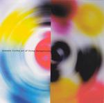

| Artist: | Tunnels |
| Title: | Live The Art Of Living Dangerously |
| Label: | Buckyball Music BR012 |
| Length(s): | 7? minutes |
| Year(s) of release: | 2004 |
| Month of review: | [06/2005] |
| 1) | Tunnels | 9.48 |
| 2) | Frank's Beard | 7.33 |
| 3) | Barrio | 7.57 |
| 4) | Flavor | 6.36 |
| 5) | Prisoners Of The Knitting Factory Hallway | 6.06 |
| 6) | The Syzygy Incident | 9.54 |
| 7) | Wall To Wall Sunshine | 4.46 |
| 8) | Lily's Dolphin | 7.42 |
| 9) | Bad American Dream The 43rd | 7.50 |
| 10) | Inseminator | 8.18 |
More melodic appeal can be found on Frank's Beard. Some passages sound positively 'empty', and thy are alternated with very recognizable melodic parts. Quite an improvement.
Plenty of vibe is present on Barrio, and I find it hard to believe it does not include guitar anywhere. The tension is right on this tune, which is one of my favourites on this album, even if the band does to continue to be somewhat standoffish.
The groove is present on the rhytmic Flavor, which contains also passages sounding like steel; drums. Prisoners Of The Knitting Factory Hallway includes a guitar, and this is immediately felt by the more thematic approach, giving something to latch on to. It also makes the overall feel less distinctive from other jazzrock (like that on Tone Center) which ordinarily focus around a guitar.
Wagnon wrote The Syzygy Incident, so it is not surprising that the keyboards play a larger role here. It is also much more somber and subdued, with some good melodies. At the end the percussionist takes the reins.
Wall To Wall Sunshine has both Goodsall on guitar AND a violinist. The guitar plays a strong riff, rather screamingly. I wonder whether the 'snare' the drummer plays really has a snare. It sound so dry.
The violin is the melodic element on the pacey Lily's Dolphin, which even has some elements of Musique Concrete, techno and samba. A rare combination. Bad American Dream The 43rd is pretty standard jzz rock fare which enjoys some furious guitar work from Julien Feltin. Closing down is the fresh sounding Inseminator with orchestral keyboards and a short drum solo obligato. It also has some more sinister elements, which to me shows Tunnels at their most likable.